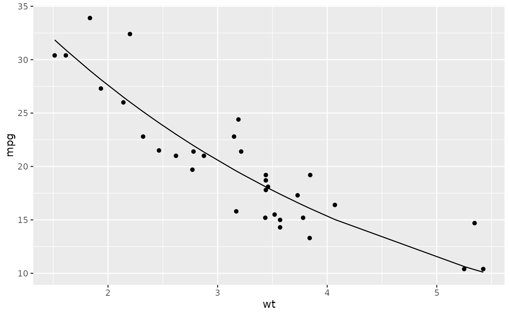

Tidy summarizes information about the components of a model. A model component might be a single term in a regression, a single hypothesis, a cluster, or a class. Exactly what tidy considers to be a model component varies across models but is usually self-evident. If a model has several distinct types of components, you will need to specify which components to return.
# S3 method for nls tidy(x, conf.int = FALSE, conf.level = 0.95, ...)
| x | An |
|---|---|
| conf.int | Logical indicating whether or not to include a confidence
interval in the tidied output. Defaults to |
| conf.level | The confidence level to use for the confidence interval
if |
| ... | Additional arguments. Not used. Needed to match generic
signature only. Cautionary note: Misspelled arguments will be
absorbed in |
tidy, stats::nls(), stats::summary.nls()
Other nls tidiers:
augment.nls(),
glance.nls()
A tibble::tibble() with columns:
Upper bound on the confidence interval for the estimate.
Lower bound on the confidence interval for the estimate.
The estimated value of the regression term.
The two-sided p-value associated with the observed statistic.
The value of a T-statistic to use in a hypothesis that the regression term is non-zero.
The standard error of the regression term.
The name of the regression term.
#> # A tibble: 2 x 5 #> term estimate std.error statistic p.value #> <chr> <dbl> <dbl> <dbl> <dbl> #> 1 k 49.7 3.79 13.1 5.96e-14 #> 2 e 0.746 0.0199 37.5 8.86e-27#> # A tibble: 32 x 4 #> mpg wt .fitted .resid #> <dbl> <dbl> <dbl> <dbl> #> 1 21 2.62 23.0 -2.01 #> 2 21 2.88 21.4 -0.352 #> 3 22.8 2.32 25.1 -2.33 #> 4 21.4 3.22 19.3 2.08 #> 5 18.7 3.44 18.1 0.611 #> 6 18.1 3.46 18.0 0.117 #> 7 14.3 3.57 17.4 -3.11 #> 8 24.4 3.19 19.5 4.93 #> 9 22.8 3.15 19.7 3.10 #> 10 19.2 3.44 18.1 1.11 #> # … with 22 more rows#> # A tibble: 1 x 9 #> sigma isConv finTol logLik AIC BIC deviance df.residual nobs #> <dbl> <lgl> <dbl> <dbl> <dbl> <dbl> <dbl> <int> <int> #> 1 2.67 TRUE 0.00000204 -75.8 158. 162. 214. 30 32#> # A tibble: 6 x 13 #> .rownames mpg cyl disp hp drat wt qsec vs am gear carb #> <chr> <dbl> <dbl> <dbl> <dbl> <dbl> <dbl> <dbl> <dbl> <dbl> <dbl> <dbl> #> 1 Mazda RX4 21 6 160 110 3.9 3.62 16.5 0 1 4 4 #> 2 Mazda RX4 W… 21 6 160 110 3.9 3.88 17.0 0 1 4 4 #> 3 Datsun 710 22.8 4 108 93 3.85 3.32 18.6 1 1 4 1 #> 4 Hornet 4 Dr… 21.4 6 258 110 3.08 4.22 19.4 1 0 3 1 #> 5 Hornet Spor… 18.7 8 360 175 3.15 4.44 17.0 0 0 3 2 #> 6 Valiant 18.1 6 225 105 2.76 4.46 20.2 1 0 3 1 #> # … with 1 more variable: .fitted <dbl>